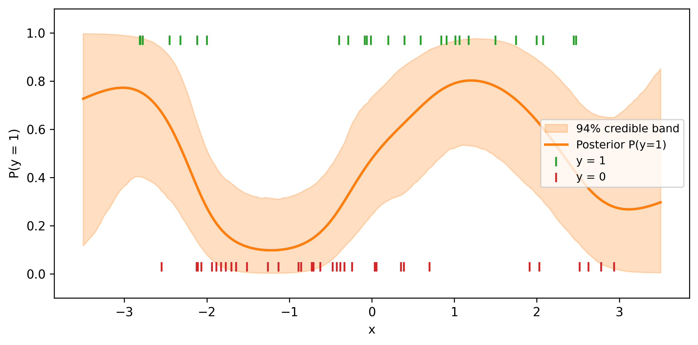

You have a scatter plot that clearly curves, but you do not know whether the relationship is quadratic, logarithmic, sinusoidal, or something with no closed-form name. You could guess a parametric form, fit it, and hope for the best. But what if you pick the wrong one? And what if the true shape changes character across the input range—gentle in one region, steep in another?
A Gaussian process lets you sidestep the entire model-selection problem. Instead of choosing a specific function, you place a probability distribution over all smooth functions and let the data decide which ones are plausible. The result is a flexible curve with uncertainty bands that widen where you have less data and tighten where you have more—exactly the behavior you want from a regression model that is honest about what it knows.
This chapter builds your understanding of Gaussian processes from the ground up: what they are, how their kernel (covariance function) encodes your prior beliefs about the shape of the function, and how to fit and predict with them in PyMC. You will also learn when not to use GPs—they carry a steep computational cost that makes them impractical for large datasets without approximation tricks.
Imports and setup
import pymc as pmimport arviz as azimport numpy as npimport pandas as pdimport matplotlib.pyplot as pltfrom numpy.random import default_rngfrom scipy.spatial.distance import cdistrng = default_rng(42)print(f"PyMC {pm.__version__}, ArviZ {az.__version__}")
PyMC 5.25.1, ArviZ 0.23.4
7.1 The Problem: Regression Without a Parametric Form
Standard regression forces you to commit to a functional form before you see the fit. Linear regression assumes a straight line. Polynomial regression assumes a global polynomial. Even splines require you to choose knot placement. If the true relationship does not match your chosen form, the model is wrong everywhere—not just at the edges, but through the middle of your data.
Consider a concrete scenario. You are tracking how a soil sensor’s reading changes with depth. The relationship is clearly nonlinear: the signal rises steeply in the first few meters, flattens out, and then oscillates with geological layers deeper down. No single parametric family captures this behavior. You could try a degree-7 polynomial, but it would oscillate wildly beyond your deepest measurement. You could try a piecewise model, but where should the breakpoints go?
What you really want is a model that says: “I believe the function is smooth, but I don’t know its shape. Let me look at the data and figure out what smooth functions are consistent with what I see.” That is exactly what a Gaussian process does.
To make this concrete, let’s generate some data from a wiggly function and pretend we don’t know the true form:
def true_function(x):"""An unknown function we are trying to recover."""return ( np.sin(1.5* x)+0.4* np.cos(3.5* x) )n_train =25X_train = np.sort( rng.uniform(-3, 3, size=n_train))y_train = ( true_function(X_train)+ rng.normal(scale=0.2, size=n_train))X_plot = np.linspace(-4, 4, 200)
Figure 7.1: Noisy observations from an unknown nonlinear function. What shape should we fit?
Looking at this plot, you might try a polynomial. But which degree? Too low and you underfit. Too high and the tails explode. A Gaussian process avoids this choice entirely.
7.2 What Is a Gaussian Process?
A Gaussian process (GP) is a probability distribution over functions. That sentence is worth sitting with. In standard regression, you have a distribution over parameter values—the slope might be 2.1 ± 0.3, for example. In a GP, the entire function is the random object. You are not estimating a few numbers; you are estimating a curve.
The formal definition is:
A Gaussian process is a collection of random variables, any finite number of which have a joint multivariate normal distribution.
Here is what that means in practice. Suppose you pick five input points \(x_1, \ldots, x_5\). A GP says that the corresponding function values \(f(x_1), \ldots, f(x_5)\) follow a five-dimensional multivariate normal distribution. Pick ten points, and you get a ten-dimensional multivariate normal. Pick a thousand, and you get a thousand-dimensional one. The GP is the rule that tells you the mean and covariance of that joint normal for any set of input points.
A GP is completely specified by two ingredients:
The mean function\(m(x)\): what you expect the function value to be at each input, before seeing any data. In practice, this is almost always set to zero (or a simple baseline), because the kernel carries most of the information.
The kernel (covariance function) \(k(x, x')\): how correlated the function values at two inputs \(x\) and \(x'\) are. This is where your beliefs live. If you believe the function is smooth, you pick a kernel that assigns high correlation to nearby points. If you believe it is periodic, you pick a kernel that makes points one period apart highly correlated.
We write: \[
f \sim \mathcal{GP}\bigl(m(x),\; k(x, x')\bigr)
\]
The connection to the multivariate normal is direct. For any collection of inputs \(\mathbf{X} = [x_1, \ldots, x_n]^T\), the vector of function values is: \[
\mathbf{f} = [f(x_1), \ldots, f(x_n)]^T
\sim \mathcal{N}(\boldsymbol{\mu},\; \mathbf{K})
\] where \(\mu_i = m(x_i)\) and \(K_{ij} = k(x_i, x_j)\).
Think of it this way: the kernel is a recipe for building a covariance matrix. You give it a set of inputs, and it hands you back a matrix. Different kernels produce different matrices, and different matrices produce different families of functions. The kernel is the GP’s personality.
7.2.1 GPs as Continuous Hierarchical Models
If you have worked through the hierarchical models chapter, you already have the core intuition for GPs. Bill Engels, a principal data scientist at PyMC Labs, frames the connection this way: “Gaussian processes are an extension of hierarchical models. Non-centered parameterization pulls information from similar groups; GPs do this continuously.”
In a hierarchical model, you have discrete groups (players, schools, hospitals), and the group-level prior pools information across groups—shrinking extreme estimates toward the overall mean. A GP does the same thing, but instead of discrete groups, you have a continuous input (age, time, spatial coordinates). Observations at nearby inputs are pooled more strongly than observations at distant inputs, with the kernel controlling “how nearby is nearby.”
Think of the covariance matrix. In a hierarchical model with exchangeable groups, the covariance is diagonal—each group gets the same prior variance but no direct correlation between groups. The moment you add a covariate like age, pure exchangeability breaks: a 25-year-old player is more similar to a 26-year-old than to a 40-year-old. A GP fills in the off-diagonal entries of the covariance matrix according to a kernel function, encoding exactly this “similar inputs should have similar outputs” belief.
Engels illustrates this with Dodgers 2023 slugging percentage (SLG) by player age: a hierarchical model estimates individual player effects, but adding a GP over age reveals a smooth age curve that peaks around 26 and drops sharply after—pooling information continuously across the age dimension in a way that discrete grouping cannot.
7.3 Kernels: Encoding Prior Beliefs
The kernel is the most important modeling choice in a GP. It determines whether the functions you draw are smooth or jagged, periodic or aperiodic, locally varying or globally rigid. Let’s tour the kernels you will use most often.
7.3.1 Squared exponential (RBF)
The squared exponential kernel, also called the radial basis function (RBF) or exponentiated quadratic, is the default choice: \[
k_{\text{SE}}(x, x') = \eta^2 \exp\!\Bigl(
-\frac{(x - x')^2}{2\ell^2}\Bigr)
\] It has two hyperparameters:
\(\eta^2\) (amplitude): controls how far the function wanders from the mean. Larger values produce bigger vertical swings.
\(\ell\) (lengthscale): controls how quickly the function can change. A small lengthscale allows rapid wiggles; a large one enforces gentle, slow-moving curves.
Functions drawn from an SE kernel are infinitely differentiable —they are as smooth as a function can be. This is both a strength (no jagged artifacts) and a weakness (real data is sometimes rougher than the SE allows).
7.3.2 Matérn
The Matérn family generalizes the SE by adding a smoothness parameter \(\nu\). The most common variants are:
Matérn-3/2 (\(\nu = 3/2\)): once differentiable. Good for functions that are smooth but have occasional sharp turns.
Matérn-5/2 (\(\nu = 5/2\)): twice differentiable. A practical middle ground between the SE’s extreme smoothness and the Matérn-3/2’s occasional sharpness.
As \(\nu \to \infty\), the Matérn converges to the SE. In practice, if you are unsure about smoothness, Matérn-5/2 is a safer default than the SE.
7.3.3 Periodic
The periodic kernel produces functions that repeat: \[
k_{\text{Per}}(x, x') = \eta^2 \exp\!\Bigl(
-\frac{2 \sin^2(\pi |x - x'| / p)}{\ell^2}\Bigr)
\] where \(p\) is the period. This is the natural choice for seasonal patterns—temperature over a year, sales over a week, tidal heights over a day.
7.3.4 Linear
The linear kernel produces functions that are straight lines (with uncertainty about the slope and intercept). On its own, it is just linear regression. Its power comes from combination: multiplying a periodic kernel by a linear kernel produces a function whose seasonal amplitude grows over time.
7.3.5 Combining kernels
You can add and multiply kernels to build richer models:
Addition (\(k_1 + k_2\)): the function is the sum of two independent components. Use this to model a smooth trend plus a periodic component.
Multiplication (\(k_1 \times k_2\)): one component modulates the other. A periodic kernel times an SE kernel produces periodicity that decays away from the center.
This composability is one of the most powerful features of GPs. Instead of guessing a parametric form, you assemble a kernel that encodes your structural beliefs (there is a trend, there is seasonality, the seasonality evolves) and let the data fill in the details.
7.3.6 Drawing from GP priors
Before fitting any data, let’s visualize what different kernels “believe.” We will draw random functions from GP priors and see how the kernel shapes them.
def build_kernel_matrix(X, kernel_fn):"""Evaluate a kernel function on a grid.""" X = X.reshape(-1, 1) K = kernel_fn(X, X)# Add a tiny nugget for numerical stability K +=1e-6* np.eye(len(X))return Kdef se_kernel(X1, X2, ls=1.0, eta=1.0):"""Squared exponential kernel.""" sq_dist = cdist(X1, X2, metric="sqeuclidean")return eta**2* np.exp(-0.5* sq_dist / ls**2)def matern32_kernel(X1, X2, ls=1.0, eta=1.0):"""Matérn-3/2 kernel.""" dist = cdist(X1, X2, metric="euclidean") r = np.sqrt(3) * dist / lsreturn eta**2* (1+ r) * np.exp(-r)def periodic_kernel( X1, X2, period=2.0, ls=1.0, eta=1.0):"""Periodic kernel.""" dist = cdist(X1, X2, metric="euclidean")return eta**2* np.exp(-2.0* np.sin(np.pi * dist / period)**2/ ls**2 )
Figure 7.2: Random functions drawn from GP priors with different kernels. The kernel determines the character of the functions.
Study this figure. The top-left panel (SE with \(\ell = 1\)) shows gentle, smooth curves. The top-right panel (SE with \(\ell = 0.3\)) shows faster wiggles—the shorter lengthscale lets the function change direction more quickly. The Matérn-3/2 draws have occasional sharper turns compared to the SE. And the periodic kernel produces functions that visibly repeat.
These are your prior beliefs before seeing data. When you fit a GP, the posterior concentrates on the subset of these functions that are consistent with the observations.
7.4 GP Regression in PyMC
PyMC provides two main GP classes for regression:
pm.gp.Marginal: analytically integrates out the latent function values and works directly with the observed data. This is more efficient for regression with Gaussian noise and is the one you will use most often.
pm.gp.Latent: explicitly represents the latent function values as parameters. This is needed when the likelihood is not Gaussian (e.g., classification), but is more computationally expensive.
Let’s fit a GP to our toy data using pm.gp.Marginal. The workflow has four steps:
Define priors on the kernel hyperparameters (lengthscale, amplitude, noise).
Build the kernel from those priors.
Create the GP and register the marginal likelihood.
/Users/kundeng/Dropbox/Projects/bayeslearner-learn-pymc/.venv/lib/python3.10/site-packages/rich/live.py:260:
UserWarning: install "ipywidgets" for Jupyter support
warnings.warn('install "ipywidgets" for Jupyter support')
Let’s unpack the key choices:
Lengthscale prior. We used InverseGamma(2, 2), which is a common weakly informative choice. It puts most mass between roughly 0.3 and 5, discouraging both implausibly short lengthscales (which would fit noise) and implausibly long ones (which would flatten the function to a line). Getting the lengthscale prior right is the single most important modeling decision in GP work—Bill Engels emphasizes that “you need to be really mindful and careful about how you’re setting priors on the GP hyperparameters.”
Two pitfalls make this choice harder than it looks. First, as Engels notes, “data is informative of the product of scale times length-scale, not each separately.” The amplitude \(\eta\) and lengthscale \(\ell\) trade off against each other: a large amplitude with a short lengthscale can produce similar fits to a small amplitude with a long lengthscale. This creates a ridge in the posterior that the sampler must navigate. Placing informative priors on at least one of the two parameters breaks the degeneracy.
Second, “once length scale is less than the data resolution, MCMC meanders in flat space—useless” (Engels). If your inputs are measured in years, a lengthscale of 0.01 years means the GP thinks the function can change completely between data points that are one year apart. The data cannot constrain what happens between observations, so the sampler wanders aimlessly. Always set the lengthscale prior’s lower bound at or above the spacing between your observations.
PC priors vs. inverse-gamma for the lengthscale
Two common prior families serve different modeling goals:
Penalized complexity (PC) priors have a long right tail, allowing the lengthscale to go to infinity (a flat function). Use PC priors when “no effect” is a plausible outcome and you want the data to have to earn any wiggles.
Inverse-gamma priors concentrate mass away from both zero and infinity. Use inverse-gamma when you believe the function must vary—a flat function is scientifically implausible— and you want to prevent the lengthscale from escaping to infinity.
Engels’s rule of thumb: “PC prior for ‘allow flat’; inverse-gamma for ‘no flat.’ Choose based on domain knowledge.”
Amplitude prior.HalfNormal(2) allows the function to have moderate vertical range without going wild.
Noise prior.HalfNormal(0.5) reflects our belief that the observations are measured with modest noise.
Kernel choice. We started with a single ExpQuad (squared exponential) kernel. This is the GP equivalent of “start with a linear model”—a reasonable default that you can elaborate later.
Look for r_hat values close to 1.0 and ess_bulk / ess_tail values in the hundreds. If the lengthscale posterior is pushed hard against its prior boundary, your prior may be too restrictive.
7.5 Making Predictions
Fitting the model estimated the kernel hyperparameters. Now we want the actual regression curve: the posterior mean and uncertainty at new input locations.
In PyMC, predictions use gp.conditional(), which computes the GP posterior conditioned on the observed data and the learned hyperparameters. You call it inside the model context, then run sample_posterior_predictive to propagate the hyperparameter uncertainty through to the predictions.
/Users/kundeng/Dropbox/Projects/bayeslearner-learn-pymc/.venv/lib/python3.10/site-packages/rich/live.py:260:
UserWarning: install "ipywidgets" for Jupyter support
warnings.warn('install "ipywidgets" for Jupyter support')
Figure 7.3: GP posterior: the mean prediction (solid line) with 94% credible band. Uncertainty widens away from the data.
Three things to notice:
The mean tracks the data. Where observations are dense, the posterior mean hugs the true function closely.
Uncertainty widens at the edges. Beyond the training data (past \(x = 3\) and before \(x = -3\)), the credible band fans out. The GP is telling you: “I have no data here, so I am reverting to my prior uncertainty.”
Uncertainty narrows near observations. Between closely spaced training points, the band is tight. The GP is interpolating with confidence.
This is the hallmark of GP regression: calibrated local uncertainty. Unlike a polynomial that confidently extrapolates a wild curve into uncharted territory, the GP admits ignorance where it has no evidence.
7.6 Choosing the Kernel
Which kernel should you use? Here are practical rules of thumb:
Start with the squared exponential. It is the simplest smooth kernel and works surprisingly well for many problems. If the fit looks good, you are done.
Switch to Matérn-5/2 if the SE over-smooths—or just start there. Real-world functions are often not infinitely differentiable. The Matérn-5/2 is twice differentiable—smooth enough to avoid jitter, rough enough to follow data that has sharper features. Chris Fonnesbeck argues that the “default kernel should be Matérn-5/2, not the exponential quadratic—it’s too smooth, it won’t fit the data” in many practical settings. The SE’s infinite smoothness looks elegant in theory but imposes a stronger assumption than most data warrant. Many practitioners now treat Matérn-5/2 as the default first choice.
Add a periodic kernel if you see seasonality. If the data has a clear repeating pattern (daily, weekly, annual), add a periodic component: cov_trend + cov_periodic. The period is often known from domain knowledge (12 months, 7 days), so you can fix it rather than estimating it.
Use a linear kernel for trends. If the data has a long-term upward or downward drift, a linear kernel captures this. Combined with other kernels via addition, it separates the trend from the local structure.
Multiply kernels to model interactions. A common pattern is Periodic × ExpQuad, which produces periodicity that decays away from the center (or, equivalently, evolves slowly over time). This is more realistic than pure periodicity for most real-world data.
7.6.1 Comparing kernels with LOO
When you have two candidate kernels and no strong domain reason to prefer one, use leave-one-out cross-validation (LOO) via ArviZ:
# After fitting gp_model_1 and gp_model_2:comp = az.compare( {"SE": trace_se, "Matern52": trace_m52}, ic="loo",)print(comp)
The model with the higher elpd_loo (expected log predictive density) fits the data better out of sample. But treat small differences cautiously—if the standard error of the difference is larger than the difference itself, the data cannot distinguish the two kernels, and you should prefer whichever is simpler.
7.7 Computational Challenges
GPs have an inconvenient cost: fitting requires inverting (or decomposing) the \(n \times n\) kernel matrix, which is \(O(n^3)\) in time and \(O(n^2)\) in memory. For 100 observations, this is instant. For 1,000, it takes a few seconds. For 10,000, it becomes painful. For 100,000, it is infeasible without approximations.
As Bill Engels puts it: “GPs are great and everybody would use them all the time if it weren’t for” the \(O(n^3)\) scaling—“just a small problem.”
7.7.1 When to use GPs vs. parametric models
Use a GP when:
You have fewer than ~1,000 observations (exact GP) or fewer than ~10,000 (with approximations).
You genuinely do not know the functional form.
You need well-calibrated uncertainty, not just a point prediction.
Use a parametric model when:
You have a strong theory about the functional form (physics, biology, economics).
You have a large dataset and a simple relationship.
Interpretability of individual parameters matters more than flexibility.
7.7.2 Sparse approximations: inducing points
The idea behind sparse GPs is simple: instead of using all \(n\) training points to define the kernel matrix, use a smaller set of \(m \ll n\) “inducing points” \(\mathbf{X}_u\). The GP is approximated by conditioning on these inducing points, reducing the cost to \(O(nm^2)\).
The approx parameter selects the approximation method: "FITC" (Fully Independent Training Conditional) is the most common, and "VFE" (Variational Free Energy) is a tighter bound. Start with FITC; switch to VFE if you want a less biased (but sometimes harder-to-optimize) approximation.
The inducing points \(\mathbf{X}_u\) are typically initialized as a uniform grid over the input range. With 25 training points, sparse approximations are overkill—you would use them when \(n\) reaches the thousands.
Fonnesbeck demonstrates the practical range of GPs in his PyCon 2018 talk with two contrasting examples. The first is salmon recruitment: a classic spawner-recruit relationship where the number of returning salmon saturates as spawner density increases. The relationship is clearly nonlinear but has no standard parametric form—a GP captures the saturation naturally with only a few dozen observations. The second is Boston Marathon finishing times: 27,000 runners, far too many for an exact GP. Fonnesbeck uses sparse approximations with K-means inducing points to fit a GP over age, revealing the characteristic performance curve across the field. The contrast illustrates when to use exact versus sparse GPs—and that sparse methods genuinely work at scale.
7.7.3 HSGP: Hilbert Space Gaussian Process
PyMC also offers pm.gp.HSGP, a spectral approximation that represents the GP using a truncated basis-function expansion. It scales as \(O(nm)\) where \(m\) is the number of basis functions, and avoids forming the kernel matrix entirely. HSGP works well for low-dimensional inputs (1D or 2D) and is the recommended approximation for time-series applications:
with pm.Model() as hsgp_model: ell = pm.InverseGamma("ell", alpha=2, beta=2) eta = pm.HalfNormal("eta", sigma=2) sigma = pm.HalfNormal("sigma", sigma=0.5) cov = eta**2* pm.gp.cov.ExpQuad( input_dim=1, ls=ell ) gp = pm.gp.HSGP( m=[20], c=1.3, cov_func=cov ) f = gp.prior("f", X=X_train_2d) y_obs = pm.Normal("y_obs", mu=f, sigma=sigma, observed=y_train, ) trace_hsgp = pm.sample( draws=1000, tune=1000, random_seed=rng )
The parameter m is the number of basis functions (higher = more accurate but slower), and c controls the boundary padding. With m=[20] and c=1.3, you get a good approximation for most 1D problems.
7.8 GPs for Classification
So far we have used GPs for regression with continuous outcomes. But GPs can also handle binary classification. The idea: use a GP as a latent function and pass it through a sigmoid (inverse logit) to get a probability, then use a Bernoulli likelihood.
This requires pm.gp.Latent because the likelihood is no longer Gaussian, so the marginal likelihood trick does not apply.
X_cls_2d = X_cls[:, None]with pm.Model() as cls_model: ell = pm.InverseGamma("ell", alpha=2.0, beta=2.0 ) eta = pm.HalfNormal("eta", sigma=3.0) cov = eta**2* pm.gp.cov.ExpQuad( input_dim=1, ls=ell ) gp = pm.gp.Latent(cov_func=cov) f = gp.prior("f", X=X_cls_2d) p = pm.math.sigmoid(f) y_obs = pm.Bernoulli("y_obs", p=p, observed=y_cls ) trace_cls = pm.sample( draws=1000, tune=1500, chains=4, random_seed=rng, target_accept=0.9, )
/Users/kundeng/Dropbox/Projects/bayeslearner-learn-pymc/.venv/lib/python3.10/site-packages/rich/live.py:260:
UserWarning: install "ipywidgets" for Jupyter support
warnings.warn('install "ipywidgets" for Jupyter support')
/Users/kundeng/Dropbox/Projects/bayeslearner-learn-pymc/.venv/lib/python3.10/site-packages/rich/live.py:260:
UserWarning: install "ipywidgets" for Jupyter support
warnings.warn('install "ipywidgets" for Jupyter support')
(a) GP classification: the latent GP (right axis) is passed through a sigmoid to produce class probabilities (shaded band).
(b)

(c)
Figure 7.4
Notice that pm.gp.Latent is slower than pm.gp.Marginal because it samples the full vector of latent function values as parameters. For classification with more than a few hundred observations, consider the HSGP approximation instead.
7.9 Worked Example: Decomposing Trend and Seasonality
Let’s put everything together with a realistic scenario: a signal that has both a long-term trend and a seasonal pattern. We will simulate data that resembles atmospheric CO\(_2\) measurements—a rising trend with an annual cycle superimposed.
Figure 7.5: Simulated CO₂-like data: an upward trend with annual seasonality. We will recover both components with a composite GP.
This data has two distinct structures:
A smooth, slowly rising trend (quadratic-ish).
A periodic annual oscillation with a period of 12 months.
We will model these with a composite kernel: an SE kernel for the long-term trend and a periodic kernel for the seasonal component.
7.9.1 Building the composite kernel
The key insight from kernel composition: addition means independent superposition. If \(f_{\text{trend}}\) is drawn from a GP with an SE kernel and \(f_{\text{seasonal}}\) is drawn from a GP with a periodic kernel, then \(f_{\text{trend}} + f_{\text{seasonal}}\) is drawn from a GP whose kernel is the sum of the two.
We add one more refinement: instead of a pure periodic kernel, we use \(\text{Periodic} \times \text{ExpQuad}\), which allows the seasonal amplitude to evolve slowly over time. This is more realistic—in real CO\(_2\) data, the seasonal swing has grown over the decades.
/Users/kundeng/Dropbox/Projects/bayeslearner-learn-pymc/.venv/lib/python3.10/site-packages/rich/live.py:260:
UserWarning: install "ipywidgets" for Jupyter support
warnings.warn('install "ipywidgets" for Jupyter support')
/Users/kundeng/Dropbox/Projects/bayeslearner-learn-pymc/.venv/lib/python3.10/site-packages/rich/live.py:260:
UserWarning: install "ipywidgets" for Jupyter support
warnings.warn('install "ipywidgets" for Jupyter support')
Figure 7.6: GP forecast of the CO₂-like signal. The model extrapolates both the upward trend and the seasonal cycle, with growing uncertainty beyond the training window.
The forecast continues both the upward trend and the seasonal oscillation. The credible band fans out beyond the training data, reflecting genuine uncertainty about the future. Notice that the seasonal component continues to oscillate predictably (the periodic kernel “knows” the pattern repeats), while the trend component grows more uncertain because there is no future data to anchor it.
This decomposition into interpretable components—trend plus season—is one of the most practical applications of kernel composition. It gives you a structured model without requiring a parametric functional form for either component.
7.10 Exercises
7.10.1 Exercise 1: Effect of the lengthscale prior
Refit the toy GP regression model from the first example, but change the lengthscale prior from InverseGamma(2, 2) to HalfNormal(sigma=0.3). How does the posterior prediction change? Does the model over-smooth or under-smooth compared to the original? Plot both posterior means on the same figure.
The HalfNormal(0.3) prior concentrates the lengthscale near short values, producing a wiggly fit that tracks the noise. The InverseGamma(2, 2) prior allows longer lengthscales, producing a smoother curve. This illustrates why the lengthscale prior is the most consequential choice in GP modeling.
7.10.2 Exercise 2: Matérn vs. squared exponential
Fit two GP models to the toy data: one with pm.gp.cov.ExpQuad and one with pm.gp.cov.Matern52. Compare them using az.compare with ic="loo". Which kernel does LOO prefer? Plot both posterior means.
Since the true function is smooth (sums of sine and cosine), the SE and Matérn-5/2 should perform similarly. The LOO difference will be small relative to its standard error. When in doubt, default to Matérn-5/2—it is more robust to functions that are not perfectly smooth.
7.10.3 Exercise 3: GP with a linear trend
Generate data from a linear function with Gaussian noise: \(y = 2x + 1 + \epsilon\). Fit a GP with a linear kernel (pm.gp.cov.Linear). Does the GP recover the slope and intercept? Compare the posterior to ordinary least squares.
The linear kernel GP recovers a straight line because it can only produce linear functions. The posterior mean will be close to \(y = 2x + 1\), matching OLS. The GP adds nothing over OLS here, but the linear kernel becomes useful when combined with other kernels to capture a linear trend alongside nonlinear structure.
7.10.4 Exercise 4: Forecasting with seasonality
Using the CO\(_2\) worked example, modify the model to use a pure periodic kernel (no ExpQuad modulation) for the seasonal component. Forecast five years ahead instead of two. How does removing the modulation affect the prediction uncertainty far into the future?
Without modulation, the pure periodic kernel assumes the seasonal pattern stays exactly the same amplitude forever. The credible band for the seasonal component stays narrow even five years out. With the Periodic × ExpQuad modulation, the model allows the seasonal amplitude to drift, producing wider bands further from the data—which is more honest about the true uncertainty.
Source Code
# Gaussian Processes: Flexible Nonlinear RegressionYou have a scatter plot that clearly curves, but you do not knowwhether the relationship is quadratic, logarithmic, sinusoidal, orsomething with no closed-form name. You could guess a parametricform, fit it, and hope for the best. But what if you pick the wrongone? And what if the true shape changes character across the inputrange---gentle in one region, steep in another?A Gaussian process lets you sidestep the entire model-selectionproblem. Instead of choosing a specific function, you place aprobability distribution over *all* smooth functions and let thedata decide which ones are plausible. The result is a flexible curvewith uncertainty bands that widen where you have less data andtighten where you have more---exactly the behavior you want from aregression model that is honest about what it knows.This chapter builds your understanding of Gaussian processes fromthe ground up: what they are, how their kernel (covariance function)encodes your prior beliefs about the shape of the function, and howto fit and predict with them in PyMC. You will also learn when *not*to use GPs---they carry a steep computational cost that makes themimpractical for large datasets without approximation tricks.```{python}#| label: setup#| code-fold: true#| code-summary: "Imports and setup"import pymc as pmimport arviz as azimport numpy as npimport pandas as pdimport matplotlib.pyplot as pltfrom numpy.random import default_rngfrom scipy.spatial.distance import cdistrng = default_rng(42)print(f"PyMC {pm.__version__}, ArviZ {az.__version__}")```## The Problem: Regression Without a Parametric FormStandard regression forces you to commit to a functional form beforeyou see the fit. Linear regression assumes a straight line.Polynomial regression assumes a global polynomial. Even splinesrequire you to choose knot placement. If the true relationship doesnot match your chosen form, the model is wrong everywhere---not justat the edges, but through the middle of your data.Consider a concrete scenario. You are tracking how a soil sensor'sreading changes with depth. The relationship is clearly nonlinear:the signal rises steeply in the first few meters, flattens out, andthen oscillates with geological layers deeper down. No singleparametric family captures this behavior. You could try a degree-7polynomial, but it would oscillate wildly beyond your deepestmeasurement. You could try a piecewise model, but where should thebreakpoints go?What you really want is a model that says: "I believe the functionis smooth, but I don't know its shape. Let me look at the data andfigure out what smooth functions are consistent with what I see."That is exactly what a Gaussian process does.To make this concrete, let's generate some data from a wigglyfunction and pretend we don't know the true form:```{python}#| label: generate-toy-datadef true_function(x):"""An unknown function we are trying to recover."""return ( np.sin(1.5* x)+0.4* np.cos(3.5* x) )n_train =25X_train = np.sort( rng.uniform(-3, 3, size=n_train))y_train = ( true_function(X_train)+ rng.normal(scale=0.2, size=n_train))X_plot = np.linspace(-4, 4, 200)``````{python}#| label: fig-toy-data#| fig-cap: "Noisy observations from an unknown nonlinear function. What shape should we fit?"fig, ax = plt.subplots(figsize=(8, 4))ax.plot( X_plot, true_function(X_plot), ls="--", color="C2", lw=1.5, label="True function (unknown)",)ax.scatter( X_train, y_train, s=30, color="C0", zorder=3, label="Observed data",)ax.set_xlabel("x")ax.set_ylabel("y")ax.legend(fontsize=9)fig.tight_layout()plt.show()```Looking at this plot, you might try a polynomial. But which degree?Too low and you underfit. Too high and the tails explode. A Gaussianprocess avoids this choice entirely.## What Is a Gaussian Process?A Gaussian process (GP) is a probability distribution overfunctions. That sentence is worth sitting with. In standardregression, you have a distribution over *parameter values*---theslope might be 2.1 ± 0.3, for example. In a GP, the entire*function* is the random object. You are not estimating a fewnumbers; you are estimating a curve.The formal definition is:> A Gaussian process is a collection of random variables, any> finite number of which have a joint multivariate normal> distribution.Here is what that means in practice. Suppose you pick five inputpoints $x_1, \ldots, x_5$. A GP says that the correspondingfunction values $f(x_1), \ldots, f(x_5)$ follow a five-dimensionalmultivariate normal distribution. Pick ten points, and you get aten-dimensional multivariate normal. Pick a thousand, and you get athousand-dimensional one. The GP is the rule that tells you themean and covariance of that joint normal for *any* set of inputpoints.A GP is completely specified by two ingredients:1. **The mean function** $m(x)$: what you expect the function value to be at each input, before seeing any data. In practice, this is almost always set to zero (or a simple baseline), because the kernel carries most of the information.2. **The kernel** (covariance function) $k(x, x')$: how correlated the function values at two inputs $x$ and $x'$ are. This is where your beliefs live. If you believe the function is smooth, you pick a kernel that assigns high correlation to nearby points. If you believe it is periodic, you pick a kernel that makes points one period apart highly correlated.We write:$$f \sim \mathcal{GP}\bigl(m(x),\; k(x, x')\bigr)$$The connection to the multivariate normal is direct. For anycollection of inputs $\mathbf{X} = [x_1, \ldots, x_n]^T$, thevector of function values is:$$\mathbf{f} = [f(x_1), \ldots, f(x_n)]^T \sim \mathcal{N}(\boldsymbol{\mu},\; \mathbf{K})$$where $\mu_i = m(x_i)$ and $K_{ij} = k(x_i, x_j)$.Think of it this way: the kernel is a recipe for building acovariance matrix. You give it a set of inputs, and it hands youback a matrix. Different kernels produce different matrices, anddifferent matrices produce different families of functions. Thekernel is the GP's personality.### GPs as Continuous Hierarchical ModelsIf you have worked through the hierarchical models chapter, youalready have the core intuition for GPs. Bill Engels, a principaldata scientist at PyMC Labs, frames the connection this way:"Gaussian processes are an extension of hierarchical models.Non-centered parameterization pulls information from similargroups; GPs do this continuously."In a hierarchical model, you have discrete groups (players,schools, hospitals), and the group-level prior pools informationacross groups---shrinking extreme estimates toward the overallmean. A GP does the same thing, but instead of discrete groups,you have a continuous input (age, time, spatial coordinates).Observations at nearby inputs are pooled more strongly thanobservations at distant inputs, with the kernel controlling "hownearby is nearby."Think of the covariance matrix. In a hierarchical model withexchangeable groups, the covariance is diagonal---each group getsthe same prior variance but no direct correlation between groups.The moment you add a covariate like age, pure exchangeabilitybreaks: a 25-year-old player is more similar to a 26-year-oldthan to a 40-year-old. A GP fills in the off-diagonal entries ofthe covariance matrix according to a kernel function, encodingexactly this "similar inputs should have similar outputs" belief.Engels illustrates this with Dodgers 2023 slugging percentage(SLG) by player age: a hierarchical model estimates individualplayer effects, but adding a GP over age reveals a smooth agecurve that peaks around 26 and drops sharply after---poolinginformation continuously across the age dimension in a way thatdiscrete grouping cannot.## Kernels: Encoding Prior BeliefsThe kernel is the most important modeling choice in a GP. Itdetermines whether the functions you draw are smooth or jagged,periodic or aperiodic, locally varying or globally rigid. Let's tourthe kernels you will use most often.### Squared exponential (RBF)The squared exponential kernel, also called the radial basisfunction (RBF) or exponentiated quadratic, is the default choice:$$k_{\text{SE}}(x, x') = \eta^2 \exp\!\Bigl( -\frac{(x - x')^2}{2\ell^2}\Bigr)$$It has two hyperparameters:- **$\eta^2$ (amplitude):** controls how far the function wanders from the mean. Larger values produce bigger vertical swings.- **$\ell$ (lengthscale):** controls how quickly the function can change. A small lengthscale allows rapid wiggles; a large one enforces gentle, slow-moving curves.Functions drawn from an SE kernel are infinitely differentiable---they are as smooth as a function can be. This is both astrength (no jagged artifacts) and a weakness (real data issometimes rougher than the SE allows).### MatérnThe Matérn family generalizes the SE by adding a smoothnessparameter $\nu$. The most common variants are:- **Matérn-3/2** ($\nu = 3/2$): once differentiable. Good for functions that are smooth but have occasional sharp turns.- **Matérn-5/2** ($\nu = 5/2$): twice differentiable. A practical middle ground between the SE's extreme smoothness and the Matérn-3/2's occasional sharpness.As $\nu \to \infty$, the Matérn converges to the SE. In practice,if you are unsure about smoothness, Matérn-5/2 is a safer defaultthan the SE.### PeriodicThe periodic kernel produces functions that repeat:$$k_{\text{Per}}(x, x') = \eta^2 \exp\!\Bigl( -\frac{2 \sin^2(\pi |x - x'| / p)}{\ell^2}\Bigr)$$where $p$ is the period. This is the natural choice for seasonalpatterns---temperature over a year, sales over a week, tidalheights over a day.### LinearThe linear kernel produces functions that are straight lines (withuncertainty about the slope and intercept). On its own, it is justlinear regression. Its power comes from combination: multiplying aperiodic kernel by a linear kernel produces a function whoseseasonal amplitude grows over time.### Combining kernelsYou can add and multiply kernels to build richer models:- **Addition** ($k_1 + k_2$): the function is the *sum* of two independent components. Use this to model a smooth trend plus a periodic component.- **Multiplication** ($k_1 \times k_2$): one component *modulates* the other. A periodic kernel times an SE kernel produces periodicity that decays away from the center.This composability is one of the most powerful features of GPs.Instead of guessing a parametric form, you assemble a kernel thatencodes your structural beliefs (there is a trend, there isseasonality, the seasonality evolves) and let the data fill in thedetails.### Drawing from GP priorsBefore fitting any data, let's visualize what different kernels"believe." We will draw random functions from GP priors and seehow the kernel shapes them.```{python}#| label: kernel-functionsdef build_kernel_matrix(X, kernel_fn):"""Evaluate a kernel function on a grid.""" X = X.reshape(-1, 1) K = kernel_fn(X, X)# Add a tiny nugget for numerical stability K +=1e-6* np.eye(len(X))return Kdef se_kernel(X1, X2, ls=1.0, eta=1.0):"""Squared exponential kernel.""" sq_dist = cdist(X1, X2, metric="sqeuclidean")return eta**2* np.exp(-0.5* sq_dist / ls**2)def matern32_kernel(X1, X2, ls=1.0, eta=1.0):"""Matérn-3/2 kernel.""" dist = cdist(X1, X2, metric="euclidean") r = np.sqrt(3) * dist / lsreturn eta**2* (1+ r) * np.exp(-r)def periodic_kernel( X1, X2, period=2.0, ls=1.0, eta=1.0):"""Periodic kernel.""" dist = cdist(X1, X2, metric="euclidean")return eta**2* np.exp(-2.0* np.sin(np.pi * dist / period)**2/ ls**2 )``````{python}#| label: fig-kernel-priors#| fig-cap: "Random functions drawn from GP priors with different kernels. The kernel determines the character of the functions."X_grid = np.linspace(-5, 5, 300)n_draws =5kernels = {"SE (ℓ=1.0)": lambda X1, X2: se_kernel( X1, X2, ls=1.0 ),"SE (ℓ=0.3)": lambda X1, X2: se_kernel( X1, X2, ls=0.3 ),"Matérn-3/2": lambda X1, X2: matern32_kernel( X1, X2, ls=1.0 ),"Periodic (p=2)": lambda X1, X2: periodic_kernel( X1, X2, period=2.0, ls=1.0 ),}fig, axes = plt.subplots(2, 2, figsize=(10, 6), sharex=True)for ax, (name, kfn) inzip(axes.ravel(), kernels.items()): K = build_kernel_matrix(X_grid, kfn) samples = rng.multivariate_normal( mean=np.zeros(len(X_grid)), cov=K, size=n_draws, )for s in samples: ax.plot(X_grid, s, lw=0.8, alpha=0.8) ax.set_title(name, fontsize=10) ax.set_ylabel("f(x)")ax.set_xlabel("x")axes[1, 0].set_xlabel("x")fig.tight_layout()plt.show()```Study this figure. The top-left panel (SE with $\ell = 1$) showsgentle, smooth curves. The top-right panel (SE with $\ell = 0.3$)shows faster wiggles---the shorter lengthscale lets the functionchange direction more quickly. The Matérn-3/2 draws have occasionalsharper turns compared to the SE. And the periodic kernel producesfunctions that visibly repeat.These are your *prior beliefs* before seeing data. When you fit aGP, the posterior concentrates on the subset of these functions thatare consistent with the observations.## GP Regression in PyMCPyMC provides two main GP classes for regression:- **`pm.gp.Marginal`**: analytically integrates out the latent function values and works directly with the observed data. This is more efficient for regression with Gaussian noise and is the one you will use most often.- **`pm.gp.Latent`**: explicitly represents the latent function values as parameters. This is needed when the likelihood is not Gaussian (e.g., classification), but is more computationally expensive.Let's fit a GP to our toy data using `pm.gp.Marginal`. Theworkflow has four steps:1. Define priors on the kernel hyperparameters (lengthscale, amplitude, noise).2. Build the kernel from those priors.3. Create the GP and register the marginal likelihood.4. Sample from the posterior.```{python}#| label: gp-marginal-modelX_train_2d = X_train[:, None] # PyMC expects (n, d)with pm.Model() as gp_model:# --- Hyperparameter priors --- ell = pm.InverseGamma("ell", alpha=2.0, beta=2.0 ) eta = pm.HalfNormal("eta", sigma=2.0) sigma = pm.HalfNormal("sigma", sigma=0.5)# --- Kernel --- cov = eta**2* pm.gp.cov.ExpQuad( input_dim=1, ls=ell )# --- GP with marginal likelihood --- gp = pm.gp.Marginal(cov_func=cov) gp.marginal_likelihood("y_obs", X=X_train_2d, y=y_train, sigma=sigma, )# --- Sample --- trace = pm.sample( draws=1000, tune=1000, chains=4, random_seed=rng, idata_kwargs={"log_likelihood": True}, )```Let's unpack the key choices:**Lengthscale prior.** We used `InverseGamma(2, 2)`, which is acommon weakly informative choice. It puts most mass betweenroughly 0.3 and 5, discouraging both implausibly shortlengthscales (which would fit noise) and implausibly long ones(which would flatten the function to a line). Getting thelengthscale prior right is the single most important modelingdecision in GP work---Bill Engels emphasizes that "you need tobe really mindful and careful about how you're setting priors onthe GP hyperparameters."Two pitfalls make this choice harder than it looks. First, asEngels notes, "data is informative of the *product* of scaletimes length-scale, not each separately." The amplitude $\eta$and lengthscale $\ell$ trade off against each other: a largeamplitude with a short lengthscale can produce similar fits to asmall amplitude with a long lengthscale. This creates a ridge inthe posterior that the sampler must navigate. Placing informativepriors on at least one of the two parameters breaks thedegeneracy.Second, "once length scale is less than the data resolution, MCMCmeanders in flat space---useless" (Engels). If your inputs aremeasured in years, a lengthscale of 0.01 years means the GPthinks the function can change completely between data points thatare one year apart. The data cannot constrain what happens betweenobservations, so the sampler wanders aimlessly. Always set thelengthscale prior's lower bound at or above the spacing betweenyour observations.::: {.callout-tip}## PC priors vs. inverse-gamma for the lengthscaleTwo common prior families serve different modeling goals:- **Penalized complexity (PC) priors** have a long right tail, allowing the lengthscale to go to infinity (a flat function). Use PC priors when "no effect" is a plausible outcome and you want the data to have to earn any wiggles.- **Inverse-gamma priors** concentrate mass away from both zero and infinity. Use inverse-gamma when you believe the function *must* vary---a flat function is scientifically implausible--- and you want to prevent the lengthscale from escaping to infinity.Engels's rule of thumb: "PC prior for 'allow flat'; inverse-gammafor 'no flat.' Choose based on domain knowledge.":::**Amplitude prior.** `HalfNormal(2)` allows the function to havemoderate vertical range without going wild.**Noise prior.** `HalfNormal(0.5)` reflects our belief that theobservations are measured with modest noise.**Kernel choice.** We started with a single `ExpQuad` (squaredexponential) kernel. This is the GP equivalent of "start with alinear model"---a reasonable default that you can elaborate later.Let's check the diagnostics:```{python}#| label: gp-diagnosticsaz.summary( trace, var_names=["ell", "eta", "sigma"], round_to=3,)```Look for `r_hat` values close to 1.0 and `ess_bulk` / `ess_tail`values in the hundreds. If the lengthscale posterior is pushed hardagainst its prior boundary, your prior may be too restrictive.## Making PredictionsFitting the model estimated the kernel hyperparameters. Now we wantthe actual regression curve: the posterior mean and uncertainty atnew input locations.In PyMC, predictions use `gp.conditional()`, which computes theGP posterior conditioned on the observed data *and* the learnedhyperparameters. You call it inside the model context, then run`sample_posterior_predictive` to propagate the hyperparameteruncertainty through to the predictions.```{python}#| label: gp-predictionsX_new = np.linspace(-4, 4, 200)[:, None]with gp_model: f_pred = gp.conditional("f_pred", Xnew=X_new ) pred_samples = pm.sample_posterior_predictive( trace, var_names=["f_pred"], random_seed=rng, )``````{python}#| label: fig-gp-posterior#| fig-cap: "GP posterior: the mean prediction (solid line) with 94% credible band. Uncertainty widens away from the data."f_post = ( pred_samples.posterior_predictive["f_pred"] .stack(sample=("chain", "draw")) .values)f_mean = f_post.mean(axis=1)f_low = np.percentile(f_post, 3, axis=1)f_high = np.percentile(f_post, 97, axis=1)fig, ax = plt.subplots(figsize=(8, 4))ax.fill_between( X_new.ravel(), f_low, f_high, alpha=0.25, color="C1", label="94% credible band",)ax.plot( X_new.ravel(), f_mean, color="C1", lw=2, label="Posterior mean",)ax.plot( X_plot, true_function(X_plot), ls="--", color="C2", lw=1.5, label="True function",)ax.scatter( X_train, y_train, s=30, color="C0", zorder=3, label="Observations",)ax.set_xlabel("x")ax.set_ylabel("y")ax.legend(fontsize=9, loc="upper right")fig.tight_layout()plt.show()```Three things to notice:1. **The mean tracks the data.** Where observations are dense, the posterior mean hugs the true function closely.2. **Uncertainty widens at the edges.** Beyond the training data (past $x = 3$ and before $x = -3$), the credible band fans out. The GP is telling you: "I have no data here, so I am reverting to my prior uncertainty."3. **Uncertainty narrows near observations.** Between closely spaced training points, the band is tight. The GP is interpolating with confidence.This is the hallmark of GP regression: *calibrated localuncertainty*. Unlike a polynomial that confidently extrapolates awild curve into uncharted territory, the GP admits ignorance whereit has no evidence.## Choosing the KernelWhich kernel should you use? Here are practical rules of thumb:**Start with the squared exponential.** It is the simplestsmooth kernel and works surprisingly well for many problems. Ifthe fit looks good, you are done.**Switch to Matérn-5/2 if the SE over-smooths---or just startthere.** Real-world functions are often not infinitelydifferentiable. The Matérn-5/2 is twice differentiable---smoothenough to avoid jitter, rough enough to follow data that hassharper features. Chris Fonnesbeck argues that the "defaultkernel should be Matérn-5/2, not the exponential quadratic---it'stoo smooth, it won't fit the data" in many practical settings. TheSE's infinite smoothness looks elegant in theory but imposes astronger assumption than most data warrant. Many practitionersnow treat Matérn-5/2 as the default first choice.**Add a periodic kernel if you see seasonality.** If the data hasa clear repeating pattern (daily, weekly, annual), add a periodiccomponent: `cov_trend + cov_periodic`. The period is often knownfrom domain knowledge (12 months, 7 days), so you can fix itrather than estimating it.**Use a linear kernel for trends.** If the data has a long-termupward or downward drift, a linear kernel captures this. Combinedwith other kernels via addition, it separates the trend from thelocal structure.**Multiply kernels to model interactions.** A common pattern is`Periodic × ExpQuad`, which produces periodicity that decays awayfrom the center (or, equivalently, evolves slowly over time). Thisis more realistic than pure periodicity for most real-world data.### Comparing kernels with LOOWhen you have two candidate kernels and no strong domain reason toprefer one, use leave-one-out cross-validation (LOO) via ArviZ:```{python}#| label: loo-comparison#| eval: false# After fitting gp_model_1 and gp_model_2:comp = az.compare( {"SE": trace_se, "Matern52": trace_m52}, ic="loo",)print(comp)```The model with the higher `elpd_loo` (expected log predictivedensity) fits the data better out of sample. But treat smalldifferences cautiously---if the standard error of the differenceis larger than the difference itself, the data cannot distinguishthe two kernels, and you should prefer whichever is simpler.## Computational ChallengesGPs have an inconvenient cost: fitting requires inverting (ordecomposing) the $n \times n$ kernel matrix, which is $O(n^3)$ intime and $O(n^2)$ in memory. For 100 observations, this isinstant. For 1,000, it takes a few seconds. For 10,000, itbecomes painful. For 100,000, it is infeasible withoutapproximations.As Bill Engels puts it: "GPs are great and everybody would use themall the time if it weren't for" the $O(n^3)$ scaling---"just asmall problem."### When to use GPs vs. parametric modelsUse a GP when:- You have fewer than ~1,000 observations (exact GP) or fewer than ~10,000 (with approximations).- You genuinely do not know the functional form.- You need well-calibrated uncertainty, not just a point prediction.Use a parametric model when:- You have a strong theory about the functional form (physics, biology, economics).- You have a large dataset and a simple relationship.- Interpretability of individual parameters matters more than flexibility.### Sparse approximations: inducing pointsThe idea behind sparse GPs is simple: instead of using all $n$training points to define the kernel matrix, use a smaller set of$m \ll n$ "inducing points" $\mathbf{X}_u$. The GP is approximatedby conditioning on these inducing points, reducing the cost to$O(nm^2)$.PyMC provides this via `pm.gp.MarginalSparse`:```{python}#| label: sparse-gp#| eval: falsen_inducing =15Xu = np.linspace( X_train.min(), X_train.max(), n_inducing)[:, None]with pm.Model() as sparse_model: ell = pm.InverseGamma("ell", alpha=2, beta=2) eta = pm.HalfNormal("eta", sigma=2) sigma = pm.HalfNormal("sigma", sigma=0.5) cov = eta**2* pm.gp.cov.ExpQuad( input_dim=1, ls=ell ) gp = pm.gp.MarginalSparse( cov_func=cov, approx="FITC" ) gp.marginal_likelihood("y_obs", X=X_train_2d, Xu=Xu, y=y_train, sigma=sigma, ) trace_sparse = pm.sample( draws=1000, tune=1000, random_seed=rng )```The `approx` parameter selects the approximation method: `"FITC"`(Fully Independent Training Conditional) is the most common, and`"VFE"` (Variational Free Energy) is a tighter bound. Start withFITC; switch to VFE if you want a less biased (but sometimesharder-to-optimize) approximation.The inducing points $\mathbf{X}_u$ are typically initialized as auniform grid over the input range. With 25 training points, sparseapproximations are overkill---you would use them when $n$ reachesthe thousands.Fonnesbeck demonstrates the practical range of GPs in his PyCon2018 talk with two contrasting examples. The first is **salmonrecruitment**: a classic spawner-recruit relationship where thenumber of returning salmon saturates as spawner density increases.The relationship is clearly nonlinear but has no standardparametric form---a GP captures the saturation naturally withonly a few dozen observations. The second is **Boston Marathonfinishing times**: 27,000 runners, far too many for an exact GP.Fonnesbeck uses sparse approximations with K-means inducingpoints to fit a GP over age, revealing the characteristicperformance curve across the field. The contrast illustrateswhen to use exact versus sparse GPs---and that sparse methodsgenuinely work at scale.### HSGP: Hilbert Space Gaussian ProcessPyMC also offers `pm.gp.HSGP`, a spectral approximation thatrepresents the GP using a truncated basis-function expansion. Itscales as $O(nm)$ where $m$ is the number of basis functions, andavoids forming the kernel matrix entirely. HSGP works well forlow-dimensional inputs (1D or 2D) and is the recommendedapproximation for time-series applications:```{python}#| label: hsgp-example#| eval: falsewith pm.Model() as hsgp_model: ell = pm.InverseGamma("ell", alpha=2, beta=2) eta = pm.HalfNormal("eta", sigma=2) sigma = pm.HalfNormal("sigma", sigma=0.5) cov = eta**2* pm.gp.cov.ExpQuad( input_dim=1, ls=ell ) gp = pm.gp.HSGP( m=[20], c=1.3, cov_func=cov ) f = gp.prior("f", X=X_train_2d) y_obs = pm.Normal("y_obs", mu=f, sigma=sigma, observed=y_train, ) trace_hsgp = pm.sample( draws=1000, tune=1000, random_seed=rng )```The parameter `m` is the number of basis functions (higher = moreaccurate but slower), and `c` controls the boundary padding. With`m=[20]` and `c=1.3`, you get a good approximation for most 1Dproblems.## GPs for ClassificationSo far we have used GPs for regression with continuous outcomes.But GPs can also handle binary classification. The idea: use a GPas a *latent function* and pass it through a sigmoid (inverselogit) to get a probability, then use a Bernoulli likelihood.This requires `pm.gp.Latent` because the likelihood is no longerGaussian, so the marginal likelihood trick does not apply.```{python}#| label: gp-classification-data# Simulate binary classification datan_cls =60X_cls = np.sort( rng.uniform(-3, 3, size=n_cls))latent =2.0* np.sin(1.5* X_cls)prob =1.0/ (1.0+ np.exp(-latent))y_cls = rng.binomial(n=1, p=prob, size=n_cls)``````{python}#| label: gp-classification-modelX_cls_2d = X_cls[:, None]with pm.Model() as cls_model: ell = pm.InverseGamma("ell", alpha=2.0, beta=2.0 ) eta = pm.HalfNormal("eta", sigma=3.0) cov = eta**2* pm.gp.cov.ExpQuad( input_dim=1, ls=ell ) gp = pm.gp.Latent(cov_func=cov) f = gp.prior("f", X=X_cls_2d) p = pm.math.sigmoid(f) y_obs = pm.Bernoulli("y_obs", p=p, observed=y_cls ) trace_cls = pm.sample( draws=1000, tune=1500, chains=4, random_seed=rng, target_accept=0.9, )``````{python}#| label: fig-gp-classification#| fig-cap: "GP classification: the latent GP (right axis) is passed through a sigmoid to produce class probabilities (shaded band)."X_cls_new = np.linspace(-3.5, 3.5, 200)[:, None]with cls_model: f_cls_pred = gp.conditional("f_cls_pred", Xnew=X_cls_new ) pred_cls = pm.sample_posterior_predictive( trace_cls, var_names=["f_cls_pred"], random_seed=rng, )f_cls_post = ( pred_cls.posterior_predictive["f_cls_pred"] .stack(sample=("chain", "draw")) .values)p_post =1.0/ (1.0+ np.exp(-f_cls_post))p_mean = p_post.mean(axis=1)p_low = np.percentile(p_post, 3, axis=1)p_high = np.percentile(p_post, 97, axis=1)fig, ax = plt.subplots(figsize=(8, 4))ax.fill_between( X_cls_new.ravel(), p_low, p_high, alpha=0.25, color="C1", label="94% credible band",)ax.plot( X_cls_new.ravel(), p_mean, color="C1", lw=2, label="Posterior P(y=1)",)ax.scatter( X_cls[y_cls ==1], np.ones(y_cls.sum()) -0.03, marker="|", s=60, color="C2", label="y = 1",)ax.scatter( X_cls[y_cls ==0], np.zeros((y_cls ==0).sum()) +0.03, marker="|", s=60, color="C3", label="y = 0",)ax.set_xlabel("x")ax.set_ylabel("P(y = 1)")ax.set_ylim(-0.1, 1.1)ax.legend(fontsize=9, loc="center right")fig.tight_layout()plt.show()```Notice that `pm.gp.Latent` is slower than `pm.gp.Marginal`because it samples the full vector of latent function values asparameters. For classification with more than a few hundredobservations, consider the HSGP approximation instead.## Worked Example: Decomposing Trend and SeasonalityLet's put everything together with a realistic scenario: a signalthat has both a long-term trend and a seasonal pattern. We willsimulate data that resembles atmospheric CO$_2$ measurements---arising trend with an annual cycle superimposed.```{python}#| label: co2-simulaten_months =180# 15 years of monthly datamonth_idx = np.arange(n_months)year_frac = month_idx /12.0# True componentstrend_true =320+1.8* year_frac +0.015* year_frac**2seasonal_true =3.0* np.sin(2* np.pi * month_idx /12.0)noise = rng.normal(scale=0.4, size=n_months)co2_obs = trend_true + seasonal_true + noise``````{python}#| label: fig-co2-data#| fig-cap: "Simulated CO₂-like data: an upward trend with annual seasonality. We will recover both components with a composite GP."fig, ax = plt.subplots(figsize=(10, 4))ax.plot( year_frac, co2_obs, lw=0.8, color="C0", alpha=0.8, label="Observed",)ax.plot( year_frac, trend_true, ls="--", color="C2", lw=1.5, label="True trend",)ax.set_xlabel("Year (from start)")ax.set_ylabel("CO₂ (ppm)")ax.legend(fontsize=9)fig.tight_layout()plt.show()```This data has two distinct structures:1. A smooth, slowly rising trend (quadratic-ish).2. A periodic annual oscillation with a period of 12 months.We will model these with a composite kernel: an SE kernel for thelong-term trend and a periodic kernel for the seasonal component.### Building the composite kernelThe key insight from kernel composition: *addition meansindependent superposition*. If $f_{\text{trend}}$ is drawn from aGP with an SE kernel and $f_{\text{seasonal}}$ is drawn from a GPwith a periodic kernel, then $f_{\text{trend}} + f_{\text{seasonal}}$is drawn from a GP whose kernel is the *sum* of the two.We add one more refinement: instead of a pure periodic kernel, weuse $\text{Periodic} \times \text{ExpQuad}$, which allows theseasonal amplitude to evolve slowly over time. This is morerealistic---in real CO$_2$ data, the seasonal swing has grownover the decades.```{python}#| label: co2-modelX_co2 = year_frac[:, None]y_co2 = co2_obswith pm.Model() as co2_model:# --- Trend kernel hyperparameters --- ell_trend = pm.InverseGamma("ell_trend", alpha=3, beta=10 ) eta_trend = pm.HalfNormal("eta_trend", sigma=20 )# --- Seasonal kernel hyperparameters --- ell_seasonal = pm.InverseGamma("ell_seasonal", alpha=3, beta=1 ) eta_seasonal = pm.HalfNormal("eta_seasonal", sigma=5 )# Period is known: 1 year = 12/12 period =1.0# in year_frac units# --- Modulation lengthscale --- ell_mod = pm.InverseGamma("ell_mod", alpha=3, beta=10 )# --- Noise --- sigma = pm.HalfNormal("sigma", sigma=1)# --- Kernels --- cov_trend = eta_trend**2* pm.gp.cov.ExpQuad( input_dim=1, ls=ell_trend ) cov_seasonal = eta_seasonal**2* ( pm.gp.cov.Periodic( input_dim=1, period=period, ls=ell_seasonal, )* pm.gp.cov.ExpQuad( input_dim=1, ls=ell_mod ) ) cov_total = cov_trend + cov_seasonal# --- GP --- gp_co2 = pm.gp.Marginal(cov_func=cov_total) gp_co2.marginal_likelihood("y_co2", X=X_co2, y=y_co2, sigma=sigma, )# --- Sample --- trace_co2 = pm.sample( draws=1000, tune=1500, chains=4, random_seed=rng, target_accept=0.9, )``````{python}#| label: co2-summaryaz.summary( trace_co2, var_names=["ell_trend", "eta_trend","ell_seasonal", "eta_seasonal","ell_mod", "sigma", ], round_to=3,)```### ForecastingNow let's predict two years into the future:```{python}#| label: co2-predictionsX_future = np.linspace(0, year_frac[-1] +2, 300)[:, None]with co2_model: f_co2_pred = gp_co2.conditional("f_co2_pred", Xnew=X_future ) co2_preds = pm.sample_posterior_predictive( trace_co2, var_names=["f_co2_pred"], random_seed=rng, )``````{python}#| label: fig-co2-forecast#| fig-cap: "GP forecast of the CO₂-like signal. The model extrapolates both the upward trend and the seasonal cycle, with growing uncertainty beyond the training window."f_co2_post = ( co2_preds.posterior_predictive["f_co2_pred"] .stack(sample=("chain", "draw")) .values)f_co2_mean = f_co2_post.mean(axis=1)f_co2_low = np.percentile(f_co2_post, 3, axis=1)f_co2_high = np.percentile( f_co2_post, 97, axis=1)fig, ax = plt.subplots(figsize=(10, 5))ax.fill_between( X_future.ravel(), f_co2_low, f_co2_high, alpha=0.2, color="C1", label="94% credible band",)ax.plot( X_future.ravel(), f_co2_mean, color="C1", lw=2, label="Posterior mean",)ax.plot( year_frac, co2_obs, lw=0.6, color="C0", alpha=0.6, label="Observed",)ax.axvline( year_frac[-1], ls=":", color="gray", lw=1, label="End of training data",)ax.set_xlabel("Year (from start)")ax.set_ylabel("CO₂ (ppm)")ax.legend(fontsize=9, loc="upper left")fig.tight_layout()plt.show()```The forecast continues both the upward trend and the seasonaloscillation. The credible band fans out beyond the training data,reflecting genuine uncertainty about the future. Notice thatthe seasonal component continues to oscillate predictably (theperiodic kernel "knows" the pattern repeats), while the trendcomponent grows more uncertain because there is no future data toanchor it.This decomposition into interpretable components---trend plusseason---is one of the most practical applications of kernelcomposition. It gives you a structured model without requiringa parametric functional form for either component.## Exercises### Exercise 1: Effect of the lengthscale priorRefit the toy GP regression model from the first example, butchange the lengthscale prior from `InverseGamma(2, 2)` to`HalfNormal(sigma=0.3)`. How does the posterior prediction change?Does the model over-smooth or under-smooth compared to the original?Plot both posterior means on the same figure.::: {.callout-tip collapse="true"}## Solution```{python}#| label: ex1-solution#| eval: falsewith pm.Model() as tight_model: ell = pm.HalfNormal("ell", sigma=0.3) eta = pm.HalfNormal("eta", sigma=2.0) sigma = pm.HalfNormal("sigma", sigma=0.5) cov = eta**2* pm.gp.cov.ExpQuad( input_dim=1, ls=ell ) gp_tight = pm.gp.Marginal(cov_func=cov) gp_tight.marginal_likelihood("y_obs", X=X_train_2d, y=y_train, sigma=sigma, ) trace_tight = pm.sample( draws=1000, tune=1000, random_seed=rng )with tight_model: f_tight = gp_tight.conditional("f_tight", Xnew=X_new ) pred_tight = pm.sample_posterior_predictive( trace_tight, var_names=["f_tight"], random_seed=rng, )f_tight_post = ( pred_tight.posterior_predictive["f_tight"] .stack(sample=("chain", "draw")) .values)f_tight_mean = f_tight_post.mean(axis=1)fig, ax = plt.subplots(figsize=(8, 4))ax.plot( X_new.ravel(), f_mean, color="C1", lw=2, label="InverseGamma(2,2)",)ax.plot( X_new.ravel(), f_tight_mean, color="C3", lw=2, label="HalfNormal(0.3)",)ax.scatter( X_train, y_train, s=30, color="C0", zorder=3,)ax.legend(fontsize=9)fig.tight_layout()plt.show()```The `HalfNormal(0.3)` prior concentrates the lengthscale nearshort values, producing a wiggly fit that tracks the noise.The `InverseGamma(2, 2)` prior allows longer lengthscales,producing a smoother curve. This illustrates why the lengthscaleprior is the most consequential choice in GP modeling.:::### Exercise 2: Matérn vs. squared exponentialFit two GP models to the toy data: one with `pm.gp.cov.ExpQuad`and one with `pm.gp.cov.Matern52`. Compare them using `az.compare`with `ic="loo"`. Which kernel does LOO prefer? Plot bothposterior means.::: {.callout-tip collapse="true"}## Solution```{python}#| label: ex2-solution#| eval: falsewith pm.Model() as matern_model: ell = pm.InverseGamma("ell", alpha=2, beta=2) eta = pm.HalfNormal("eta", sigma=2.0) sigma = pm.HalfNormal("sigma", sigma=0.5) cov = eta**2* pm.gp.cov.Matern52( input_dim=1, ls=ell ) gp_m52 = pm.gp.Marginal(cov_func=cov) gp_m52.marginal_likelihood("y_obs", X=X_train_2d, y=y_train, sigma=sigma, ) trace_m52 = pm.sample( draws=1000, tune=1000, random_seed=rng, idata_kwargs={"log_likelihood": True}, )comp = az.compare( {"SE": trace, "Matern52": trace_m52}, ic="loo",)print(comp)```Since the true function is smooth (sums of sine and cosine), theSE and Matérn-5/2 should perform similarly. The LOO differencewill be small relative to its standard error. When in doubt,default to Matérn-5/2---it is more robust to functions that arenot perfectly smooth.:::### Exercise 3: GP with a linear trendGenerate data from a linear function with Gaussian noise:$y = 2x + 1 + \epsilon$. Fit a GP with a *linear* kernel(`pm.gp.cov.Linear`). Does the GP recover the slope and intercept?Compare the posterior to ordinary least squares.::: {.callout-tip collapse="true"}## Solution```{python}#| label: ex3-solution#| eval: falsen_lin =40X_lin = np.sort( rng.uniform(-3, 3, size=n_lin))[:, None]y_lin = (2.0* X_lin.ravel()+1.0+ rng.normal(scale=0.5, size=n_lin))with pm.Model() as linear_gp_model: tau = pm.HalfNormal("tau", sigma=5) sigma = pm.HalfNormal("sigma", sigma=1) cov = tau**2* pm.gp.cov.Linear( input_dim=1, c=0 ) gp_lin = pm.gp.Marginal(cov_func=cov) gp_lin.marginal_likelihood("y_obs", X=X_lin, y=y_lin, sigma=sigma, ) trace_lin = pm.sample( draws=1000, tune=1000, random_seed=rng )X_lin_new = np.linspace(-4, 4, 100)[:, None]with linear_gp_model: f_lin = gp_lin.conditional("f_lin", Xnew=X_lin_new ) pred_lin = pm.sample_posterior_predictive( trace_lin, var_names=["f_lin"], random_seed=rng, )f_lin_post = ( pred_lin.posterior_predictive["f_lin"] .stack(sample=("chain", "draw")) .values)f_lin_mean = f_lin_post.mean(axis=1)fig, ax = plt.subplots(figsize=(8, 4))ax.plot( X_lin_new.ravel(), f_lin_mean, color="C1", lw=2, label="GP (Linear kernel)",)ax.plot( X_lin_new.ravel(),2* X_lin_new.ravel() +1, ls="--", color="C2", label="True: y = 2x + 1",)ax.scatter( X_lin.ravel(), y_lin, s=30, color="C0", zorder=3,)ax.legend(fontsize=9)fig.tight_layout()plt.show()```The linear kernel GP recovers a straight line because it can onlyproduce linear functions. The posterior mean will be close to$y = 2x + 1$, matching OLS. The GP adds nothing over OLS here,but the linear kernel becomes useful when *combined* with otherkernels to capture a linear trend alongside nonlinear structure.:::### Exercise 4: Forecasting with seasonalityUsing the CO$_2$ worked example, modify the model to use a pureperiodic kernel (no `ExpQuad` modulation) for the seasonalcomponent. Forecast five years ahead instead of two. How doesremoving the modulation affect the prediction uncertainty far intothe future?::: {.callout-tip collapse="true"}## Solution```{python}#| label: ex4-solution#| eval: falsewith pm.Model() as co2_pure_model: ell_trend = pm.InverseGamma("ell_trend", alpha=3, beta=10 ) eta_trend = pm.HalfNormal("eta_trend", sigma=20 ) ell_seasonal = pm.InverseGamma("ell_seasonal", alpha=3, beta=1 ) eta_seasonal = pm.HalfNormal("eta_seasonal", sigma=5 ) sigma = pm.HalfNormal("sigma", sigma=1) cov_trend = eta_trend**2* pm.gp.cov.ExpQuad( input_dim=1, ls=ell_trend )# Pure periodic---no modulation cov_seasonal = eta_seasonal**2* ( pm.gp.cov.Periodic( input_dim=1, period=1.0, ls=ell_seasonal, ) ) cov_total = cov_trend + cov_seasonal gp_pure = pm.gp.Marginal(cov_func=cov_total) gp_pure.marginal_likelihood("y_co2", X=X_co2, y=y_co2, sigma=sigma, ) trace_pure = pm.sample( draws=1000, tune=1500, random_seed=rng )# Forecast 5 years aheadX_far = np.linspace(0, year_frac[-1] +5, 400)[:, None]with co2_pure_model: f_far = gp_pure.conditional("f_far", Xnew=X_far ) pred_far = pm.sample_posterior_predictive( trace_pure, var_names=["f_far"], random_seed=rng, )f_far_post = ( pred_far.posterior_predictive["f_far"] .stack(sample=("chain", "draw")) .values)f_far_mean = f_far_post.mean(axis=1)f_far_low = np.percentile(f_far_post, 3, axis=1)f_far_high = np.percentile( f_far_post, 97, axis=1)fig, ax = plt.subplots(figsize=(10, 5))ax.fill_between( X_far.ravel(), f_far_low, f_far_high, alpha=0.2, color="C1",)ax.plot( X_far.ravel(), f_far_mean, color="C1", lw=2,)ax.plot( year_frac, co2_obs, lw=0.6, color="C0", alpha=0.6,)ax.axvline( year_frac[-1], ls=":", color="gray", lw=1)ax.set_xlabel("Year (from start)")ax.set_ylabel("CO₂ (ppm)")fig.tight_layout()plt.show()```Without modulation, the pure periodic kernel assumes theseasonal pattern stays exactly the same amplitude forever.The credible band for the seasonal component stays narroweven five years out. With the `Periodic × ExpQuad` modulation,the model allows the seasonal amplitude to drift, producingwider bands further from the data---which is more honest aboutthe true uncertainty.:::